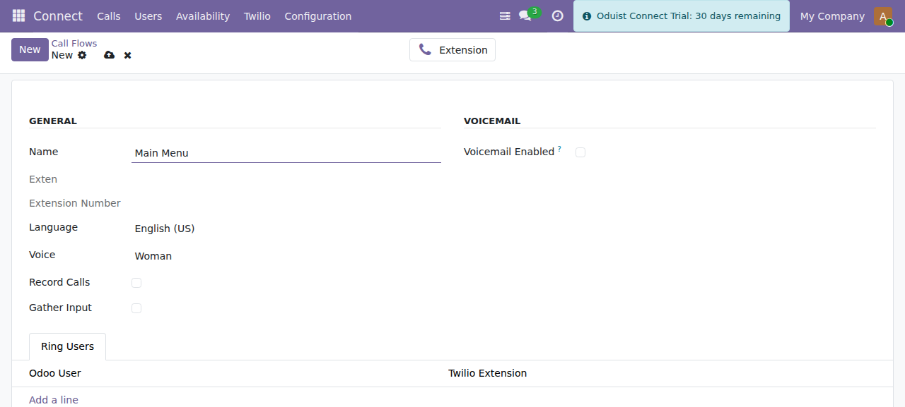
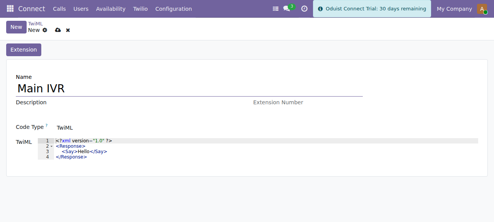

Call Flows & TwiML Apps
Twilio call handling in Connect comes in two layers: Call Flows (managed IVR
menus rendered as TwiML <Gather>) and TwiML Apps (arbitrary voice logic).
Call Flows (IVR)
Manage under Connect ▸ Twilio ▸ Call Flows (connect.twilio.callflow).
A call flow plays a prompt and gathers a caller response (DTMF and/or speech), then routes to an extension based on the choice.

A call flow: prompt language and voice, gather/record toggles, ring users and an optional voicemail fallback.
| Field | Description |
|---|---|
| Name | Call-flow label. |
| Extension | Auto-created connect.twilio.exten that points at this flow. |
| Language | BCP-47 language for the <Say> prompt (e.g. en-US). |
| Voice | Twilio voice used to read the prompt. |
| Gather config | Input type (DTMF/speech), number of digits, timeout, etc. |
| Choices | One row per menu option: digits, target extension, optional speech hint. |
| Ring Users | Users to ring for a "reception"-style flow. |
| Voicemail | Optional voicemail fallback. |
How it runs
- The flow renders a TwiML
<Gather>wrapping a<Say>prompt. The gather's action URL points at/twilio/webhook/callflow/<id>/gather. - Twilio collects the caller's DTMF/speech and POSTs it back.
gather_action()matches the input against the configured choices and routes the call to the corresponding extension.
Language list is duplicated by design
The BCP-47 language selection is intentionally copied across the Twilio,
FreeSWITCH and Telnyx call flows and core connect.user (ADR-031/ADR-037).
There is no shared mixin — a change to the list must be applied to every copy
in the same commit.
TwiML Applications
Manage under Connect ▸ Twilio ▸ TwiML Apps (connect.twilio.twiml). A TwiML
app is a reusable voice application you can attach to a number, an extension, a
SIP domain, or a user.
| Code Type | Field | Description |
|---|---|---|
| TwiML | twiml |
Raw TwiML XML, rendered as a Jinja2 template. |
| TwiPy | twipy |
Python code that programmatically builds and returns TwiML. |
| Model Method | model + method |
Calls a named method on an Odoo model to produce TwiML. |

A TwiML application. The code type selects raw TwiML, TwiPy (Python) or a model method.
Other fields: Name, Description, computed Voice URL / Voice Fallback URL / Voice Status URL, SID (Twilio Application SID), and an associated Extension.
Lifecycle
- Creating a TwiML app creates the corresponding Twilio Application via the API and an extension for direct dialing.
- Editing pushes updated webhook URLs to Twilio.
- Deleting removes the Twilio Application.
- Inbound voice requests hit
/twilio/webhook/twiml/<id>, which callsrender()and dispatches to the twiml / twipy / model-method renderer.
TwiPy runs server-side Python
The TwiPy code type executes Python (exec) to generate TwiML. Only
Connect Administrators can edit TwiML apps (connect.group_admin has full
CRUD; the Connect User group has read-only access). Treat TwiPy code as
trusted server code and review it accordingly.
Default TwiML data
The module ships default TwiML in data/twiml.xml. The voice_call_request
WhatsApp content template (in data/whatsapp_templates.xml) is used for voice
call consent requests.